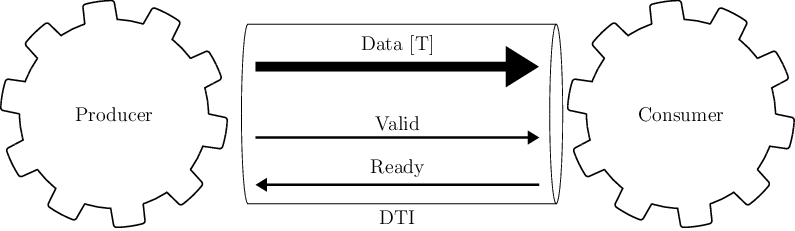

Introduction to Gears¶
The main goal of the Gears hardware design methodology is to enable easy composition of hardware modules. Gears provides guidelines on how modules need to be implemented and standardizes the interface between them. This methodology was inspired by the Category theory and functional programming.
Modules that adhere to the Gears methodology are called gears. Gears are self-synchronizing, meaning that they can be composed without the need of some global control FSM. On the other hand, they add no overhead in terms of latency and induce little to no overhead in terms of the logic gates used.
Since the composition becomes easy when adhering to Gears, the design can be broken down/factored to small modules that implement basic functionalities, which is aligned with the Single responsibility principle. Small modules with a single functionality are easier to understand, test, debug, maintain and most importantly: reuse. When using Gears for your project, you are basically building a library of well tested, well understood modules, that you can easily reuse.
One interface¶
The main idea behind standardized interfaces is to provide easy composition of the modules. These interfaces: AXI, Avalon, etc., have been used so far to compose large modules written in RTL called IPs, and they are popular for developing SoCs (System on chip). Gears tries to push this standardization all the way down to the basic building blocks like: counters, MUXs and FIFOs.

DTI - Data Transfer Interface
Gears proposes the use of a single interface type for gear communication, called DTI (Data Transfer Interface), throughout the design. Interface connects two gears, one which sends the data and the other one which receives it, called Producer and Consumer respectively. This interface DTI is a simple synchronous, flow-controlled interface, somewhat similar to AXI4-Stream, consisting of the following three signals:
Data - Variable width signal, driven by the Producer, which carries the actual data.
Valid - Single bit wide signal, driven by the Producer, which signals when valid data is available on Data signal.
Ready - Single bit wide signal, driven by the Consumer, which signals when the data provided by the Producer has been consumed.
Gears need to adhere to the following rules:
Producer shall initiate the data transfer by posting the data on Data signal, and rising Valid signal to high, as seen in cycle 1, 6 and 7 in the figure.
Consumer can start using the input data in the same cycle the Valid line went high.
Consumer can use the input data sent by the Producer for internal calculations for as many cycles as needed. For an example in cycles 1-3 in the figure.
When Consumer realizes that it is the last cycle in which it needs the input data, it raises the Ready signal to high (cycles 3, 6 and 7 in the figure, marked also as ACK). On the edge of the clock if both Valid and Ready signals are high, it is said that the Consumer acknowledged/consumed the data, or that the handshake has happened. This signals the Producer that in the following cycle new data transfer can be initiated, or Valid signal can be set to low (cycles 4 or 7 in the figure), which will pause the data transfer.
After initiating the transfer, Producer shall keep the Data signal unchanged and the Valid signal high until the handshake occurs, as seen in cycles 1-2 in the figure.
Producer can keep Valid signal low for as many cycles as needed, which will block the Consumer if it is waiting for new input data, as seen in cycles 6-7 in the figure.
There must be no combinatorial path from Ready to Valid signal on the Producer side. In other words, the Producer should not decide whether to output the data based on the state of the Consumer, but only based on its own inputs and internal state.
Consumer may decide whether to acknowledge the data based on the state of the Valid signal, i.e. there may exist a combinatorial path from Valid to Ready signal on the Consumer side.
Powerful type system¶
To enhance the composability, gear inputs and outputs are all assigned a type, which are usually generic, i.e. parameterized. Example of basic types are: Uint[T] and Int[T], which denote variable sized unsigned and signed integers. For an example Uint[16] is 16-bit wide unsigned integer. Gears defines complex types also, such as:
Tuple¶
Tuple combines multiple data types, even other Tuples. They are akin to structs or records. For an example:
example_t = Tuple[Uint[8], Tuple[Uint[16], Uint[16]]] # (u8, (u16, u16))
is a structure with two fields, one 8-bit unsigned integer and another again tuple with two 16-bit unsigned integer fields. In SystemVerilog this example type would be encoded as:
typedef struct packed
{
logic [15 : 0] field1;
logic [15 : 0] field0;
} example_sub_t;
typedef struct packed
{
logic [7 : 0] field0;
example_sub_t field1;
} example_t;
Union¶
Union can carry data of one of multiple other types. It has a control and data fields. Value of the control field determines how the data field should be interpreted. For an example:
example_t = Union[Uint[16], Uint[8]] # u16 | u8
is a union where its control bit determines if the data is interpreted as 16-bit or 8-bit unsigned integer. In SystemVerilog this example type would be encoded as:
typedef union packed
{
logic [ 7 : 0] type1;
logic [15 : 0] type0;
} example_data_t;
typedef struct packed
{
logic [0 : 0] ctrl;
example_data_t data;
} example_t;
Array¶
Array is similar to Tuple, but its fields are of the same type. For an example:
example_t = Array[Uint[8], 4]
is a structure of 4 fields, each of which is an 8-bit unsigned integers. In SystemVerilog this example type would be encoded as:
typedef logic [7 : 0] example_data_t;
typedef example_data_t [0 : 3] example_t;
Queue¶
Queue is a data type which is a bit special in that it describes a transaction and spans multiple cycles. It has a data field as well as an eot field which marks the end of a transaction. Below, you can see two transactions of a single-level Queue, one consisting of 3 data (cycles 3, 6 and 7), and the other consisting of a single data (cycle 10). Value of 1 for the field eot marks the last data within a transaction (cycles 7 and 10).
Queue can have multiple levels and hence describe more complex transactions. For an example:
example_t = Queue[Uint[8], 2] # [u8]^2
is a level 2 Queue of 8-bit unsigned integers. Level 2 means that it is a Queue of 8-bit unsigned integer Queues. In SystemVerilog this example type would be encoded as:
typedef struct packed
{
logic [1 : 0] eot;
logic [7 : 0] data;
} example_t;
Below, you can see a single transactions of a two-level Queue, consisting of two first-level Queues. The higher bit of the eot field - eot[1], describes the higher level Queue. It has value of 1 throughout the last first-level Queue (cycles 10 and 11).
Gear composition¶
Any composition of gears again yields a gear which obeys all the listed rules, i.e. gears are closed under composition. This means that composing gears is predictable in many ways and having rich and verified low level library of gears, translates to reliable description of high level modules, where many (especially synchronization) errors are avoided by design. Hence, Gears methodology is useful for high level as well as low level modules. Gears methodology maximizes module reuse, which in turn minimizes design and debugging efforts.
![\draw[thick] (0, 0) \gear{10}{2}{2.4}{16}{2}{g1}{G1};
\draw[thick,xshift=32.5mm, yshift=30.5mm, rotate=17] \gear{10}{2}{2.4}{16}{2}{g2}{G3};
\draw[thick,xshift=1.5mm, yshift=63mm, rotate=0] \gear{10}{2}{2.4}{16}{2}{g2}{G2};
\draw[thick,xshift=77mm, yshift=34.5mm, rotate=32] \gear{10}{2}{2.4}{16}{2}{g2}{G4};
\draw[thick,xshift=92,yshift=85,rotate=-15] \gear{26}{6.9}{7.3}{6}{0.5}{comp}{};
\draw[-Triangle,line width=1mm] (-6, -0.5) -- node[above] {Input2} ++(3, 0);
\draw[-Triangle,line width=1mm] (-6, 7.5) -- node[above] {Input1} ++(3.8, 0);
\draw[-Triangle,line width=1mm] (10.2, 3.2) -- node[above] {Output} ++(3, 0);](_images/tikz-b588b70894e8a4dcc98e49e37345812607263fe5.png)
Example 2-input and 1-output complex gear as a composition of gears G1, G2, G3 and G4
Each gear is locally synchronized with each of its neighbors, hence no clunky global control FSM is needed to synchronize a high level module. This is a huge benefit for using the Gears methodology, because control FSMs are very hard to write and error-prone for complex systems. Furthermore, they make any change to the system very expensive, especially those that alter the data-path latency.
In order to further reduce the cognitive load, testability and amount of errors in a hardware system being developed, Gears methodology proposes that gears should aim to be pure (akin to pure functions). A gear is considered pure if its local state is reset each time after the gear consumes/acknowledges its input data. If a gear operates on Queues, it is still considered pure if its local state is reset after the whole Queue has been processed.
Functors¶
Functors are powerful patterns for gear composition that significantly improve possibilities for gear reuse. There is one functor for each complex data type. Functors allow for gears that operate on simpler data types to be used in context where a more complex data type is needed.
Tuple functor¶
Tuple functors are useful in context where we need to operate on Tuples of some data types, and we already have gears that implement desired transformation but operate on data types that are individual fields of the Tuple. Consider a simple example where a complex number is implemented as the following Tuple:
cmplx_t = Tuple[Uint[16], Uint[16]] # (u16, u16)
Suppose we would like to implement a module that doubles the complex numbers, and we already have a module that doubles 16-bit unsigned numbers that we would like to reuse. We could than make use of the Tuple functor structure to achieve this.
Within Tuple functor, input Tuple data is first split into two, fed to individual functions and then recombined into a Tuple. PyGears can automatically generate such a structure based on the input type and gears that are to be used inside a functor.
Union functor¶
Union functors are useful in context where we need to operate on Unions of some data types, and we already have gears that implement desired transformation but operate on data types that are part of the Union. Consider a simple example where a number can be represented by either an Uint[16] or a Q8.8 fixed point:
num_t = Union[Uint[16], Tuple[Uint[8], Uint[8]]] # u16 | (u8, u8)
Suppose we would like to implement a module that decrements the number, and we already have a module that decrements 16-bit unsigned integers and a module that decrements Q8.8 fixed point numbers that we would like to reuse. We could than make use of the Union functor structure to achieve this.
Within Union functor, input Union data is routed to one of two gears by the Demux gear, depending on which data type the Union data carries, i.e by the value of the ctrl field. After processing by the gears, output data is wrapped in Union data type again by the Mux gear. PyGears can automatically generate such a structure based on the input type and gears that are to be used inside a functor.
Array functor¶
Array functor operates in the same manner as Tuple functor.
Queue functor¶
Queue functors are useful in context where we need to operate on Queues of some data types, and we already have gears that implement desired transformation but operate on single data or lower level Queues. They are akin to the Python’s map function operating on a list. Consider a simple example where there is a Queue of numbers:
q_num_t = Queue[Uint[16]] # [u16]
Suppose we would like to implement a module that multiplies each number in the Queue by 2, and we already have a module that multiplies single numbers that we would like to reuse. We could than make use of the Queue functor structure to achieve this.
Within Queue functor, input Queue data is first split into the individual data and the Queue structure, also called the envelope. Queue structure is defined by the pattern of its eot field. The individual data is fed to the function and is then recombined with the envelope to produce the output Queue. PyGears can automatically generate such a structure based on the input type and gears that are to be used inside a functor.